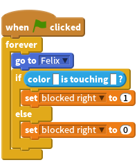
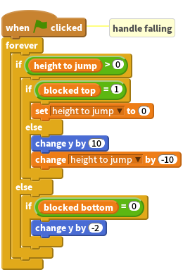
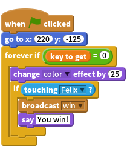
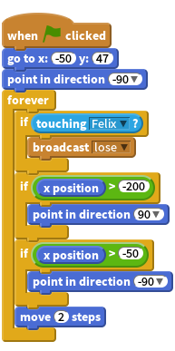

In this project, you’ll build a complex game. It’s a platform game, where Felix the Cat jumps around, dodging baddies and collecting keys to escape the cavern. When he’s done that, he’ll go to the next cavern and do it all over again.
In the first week of this project, you’ll be learning how to make Felix move and interact with various things. In the second week, you’ll design your own levels. In the third week, you’ll put the levels together into a complete game.
Week 1: Building Blocks
Platform games, like Manic Miner and Mario Bros, are all about the central figure moving around a world and bumping into things. Some things, like walls and floors, just stop you moving. Some things, like baddies, will kill you. Some things, like keys, you want to collect. Some things are just scenery and don’t affect the game at all.
That means that knowing when you’ve bumped into something (called collision detection) is important. Scratch gives you a few blocks for collision detection: <touching? [sprite]>, <touching color []?>, <color [] is touching []?>, and (distance to [sprite]). However, to make the game, you need to know more than just whether you’re touching something: you need to know which side is touching it. If you walk up to a wall on the left, you can’t go left any more. But you can still go right, or jump, or fall if there’s no floor.
Touching a baddie may hurt you; but if you touch it with your feet, you may hurt the baddie. None of the built-in Scratch blocks tell you about direction of contact. So we’ve got to build our own collision detectors.
Task 1: Collision detectors
We’ll have four sprites that follow Frantic Felix around. Each will detect collisions in one direction and set a variable if it’s detected one. The main Felix sprite will use these variables to control how Felix can move. Each collision detector will have a bar of colour and use the <color [] is touching [] ?> block to detect things. We’ll use black for the floor and green for obstacles. We’ll use red for the collision detectors.
Activity Checklist
- Open a new project. Add the frantic-felix/testlevel background and delete the plain white background1.
- Rename Sprite1 as Felix. Make sure his costume can only flip left-right.
- Create four new sprites from the images frantic-felix/top, frantic-felix/bottom, frantic-felix/left, and frantic-felix/right. These sprites are the collision detectors. Call the new sprites Top, Bottom, Left, and Right. Make sure that their costumes can’t rotate or flip.
- Create four
variables(for all sprites): blocked top, blocked bottom, blocked right, and blocked left. Give each of the detector sprites this script:

Change the variables for each detector. The bottom detector needs an or block so that it sets blocked bottom if it’s touching either green or black. Hint: It’s easier to pick the colours in one sprite, then drag the script to the other sprites and change the variables being set. It saves having to find the right colours four times. At the moment, Felix just needs a script to follow the mouse pointer forever.
Test Your Project
Click the green flag.
You should see Felix follow the mouse pointer around, surrounded by a red rectangle. The rectangle is the collision detector. If you watch the variables, you should see them change as you drag Felix around and he touches different parts of the screen. At the moment, Felix moves through the platforms and the green obstacle. We’ll fix that in the next couple of steps.
Save Your Project
Task 2: Walking, floors and falling
- Next is to make Felix walk. We’ll use the left and right arrow keys to move him left and right. If he’s not supported by a floor, he’ll fall down. (We’ll do jumping next.) If the left arrow key is pressed, we want Felix to point left and move left a bit. But we also want him not to move left if there’s an obstacle there.
- We could use the
<when [key] pressed>hats to make Felix move, but that gives a jerky motion. Things move more smoothly if you put<if key [left arrow] pressed?>blocks inforeverloops. Collision detection means we need to include the test of the blocked left variable in theif, using an and block so that Felix only moves left if the key is pressed and left blocked is zero. We need to do the same for moving right. - We could animate Felix’s legs in the same block, but they end up moving too fast. Do the animation in a separate
foreverblock under another when green flag clicked hat. The final thing to do is falling. If there’s no solid ground under Felix, we want him to fall. That’s another
forever loopunder another green flag hat.![when FLAG clicked //handle moving
forever
if <<key [left arrow v] pressed?> and <(blocked left)=(0)>
point in direction (-90 v)
move (2) steps
end
if <<key [right arrow v] pressed?> and <(blocked left)=(0)>
point in direction (90 v)
move (2) steps
end
when FLAG clicked //[animate Felix]
forever if <<key [left arrow v] pressed?>or<key [right arrow v] pressed?>>
next costume
wait (0.1) secs
end
when FLAG clicked //handle falling
forever
if <(blocked bottom)=(0)>
change y by (-2)
end
end](9f75b1885e641dbeed02786a1a65785d309fbdaa.png)
We also want the collision detectors to disappear. We can’t just use a
hideblock, because then they won’t detect any collisions. Instead, put aset [ghost] effect to 100right under the green flag hat in each collision detector. That makes the sprite invisible without hiding it.
Test Your Project
Use the mouse to drag Felix to somewhere on the stage and then click the green flag. If Felix jumps to the mouse pointer, you need to remove that script!
You should be able to use the left and right buttons to make Felix walk from side to side. If he’s not standing on the floor, he should fall gently.
When you click the green flag, the collision detectors should disappear. They’ll reappear when you press the red stop sign.
Save Your Project
Task 3: Jumping
The final part of making Felix move is jumping. Let’s have the space key make Felix jump. There are a few wrinkles to jumping:
- We don’t want Felix to fall if he’s going up.
- We don’t want Felix to be stopped by floors when he’s going up, but we still want him to be stopped by floors when he’s coming down.
- We don’t want Felix to jump up into the underside of a green obstacle.
- We want the jump to be animated, so we don’t want Felix to instantly move up a large distance.
- Felix should only be able to jump if he’s standing on a floor. The game would be too easy if Felix could jump off thin air.
- We’ll control jumping with a new
variable, height to jump. If this is greater than zero, Felix is going up. If it’s zero, Felix is falling (or has fallen), as per the previous stage. - We’ll make Felix jump up 100 pixels, all things being equal. Add another if block inside the
foreverblock that handles key presses. If we press the space key and Felix is standing on a floor (that is blocked below is set to 1), set height to jump to 100. - We want to change the falling script. Inside the
forever, we want anif-elseblock that detects if Felix is jumping up or not. The condition for thisif-elseblock is whether height to jump is greater than zero. The existing fallingifblock goes in the else part of the newif-elseblock. - When we know Felix is jumping up, we need to check if he’s bumped his head against something. If blocked top is 1, set height to jump to zero. (This stops Felix jumping up into obstacles). Otherwise, move Felix up by ten and reduce height to jump by ten.
You should end up with this:

Test your project
Click the green flag. Does Felix jump? Does he jump from one platform to another? Does he still fall when he walks off the end of a platform? What if he jumps off the end of a platform? What if he tries to jump underneath the green block on the right? What happens if you press the space bar while Felix is falling?
Save Your Project
Task 4: Keys and goals
We’ve got Felix moving around the world. Now to make him finish a level.
We’ll put three keys around the cavern. Felix collects a key by touching it. When he’s collected all three, he’ll be able to climb into an escape pod and flee!
- We’ll have a new
variable, keys to get, which tracks how many keys there are still to get. A new script on the stage should set this to 3 when the green flag is clicked. - The keys and the escape pod will each be sprites. (Use frantic-felix/key for the keys and frantic-felix/escape-pod for the pod.)
- Each key needs two scripts: one places the key in the right position, with the size and angle, then has a
foreverloop to change the colour (that just makes it easy to see on the screen). The other script is aforever ifloop that waits until Felix touches the key. As soon as that happens, the script hides the key and decrements keys to get. The escape pod has a slightly more complex script. It uses a
forever ifblock to wait for keys to get to become zero. As soon as that happens, the pod starts flashing (to show the player that they can escape). Then we can use anotherifto detect when Felix touches the flashing escape pod. As soon as he does, the podbroadcastsa win message and says “You win!”. Felix responds to the win message by hiding.
Test Your Project
Click the green flag.
Save Your Project
Task 5: Baddies and deadly scenery
Now, baddies!
We’ll have two types of dangerous things. One type will be baddies that wander around and hurt Felix if he bumps into them. The other type will be bits of dangerous scenery.
Let’s do the roving baddie first. It will just move along a fixed path.
Activity Checklist
- Create a new sprite, using whatever costume you like. Make sure it’s about the same size as Felix (We used the things/flower-vase costume, edited to be made smaller by four steps). The baddie needs just a single script that both moves it and detects when it’s touching Felix.
Put three
ifstatements inside a forever loop. The first if checks whether the baddie is touching Felix; if it is, itbroadcaststhe lose message. The other twoif’s check whether the baddie has reached the end of its path; if it has, the baddie turns round. Finally, the baddie takes two steps. (Using move instead of glide blocks makes it easier to control how fast the baddie goes.) We don’t need to use the collision detector sprites here, as we don’t care which side of Felix touches the baddie.
Add scripts to both Felix and the escape pod to respond to the lose message. Felix should just hide in response. The pod should say [You lose!].
Test Your Project
Click the green flag. Does the vase move along? Does it stop and turn round at the ends? What happens when Felix walks into it? What happens if Felix jumps into it, whether from below or above? Does Felix disappear? Does the pod say the right thing? Can you still win the game?
Save Your Project
Next, dangerous scenery! Let’s say that anything bright blue is deadly to Felix.
- Load the background frantic-felix/level2, which has a blue rose on the upper level. Add another script to Felix, under a green flag hat:
<forever if touching [blue] broadcast [lose]>
Test Your Project
Click the green flag. Does Felix die if he touches the blue rose? What if he touches other things?
Save Your Project
Recap
What you’ve built is a very simple platform game. As it stands, it’s a pretty rubbish game. But that’s not the point. This game is a toolkit for how to build your own platform game levels. You’ll design your own levels next week.
Week 2: Designing levels
Last week, you built all the parts of a platform game. This week, you’ll use those pieces to make your own levels.
To recap, you made several things happen:
- Felix can walk left and right and jump.
- Felix falls unless a black floor stops him.
- Felix can’t move through green obstacles.
- Blue bits of scenery and baddies kill Felix.
- Baddies move around fixed patrol routes.
- Baddies kill Felix if he touches them.
- If Felix moves into a key, he collects it.
- When Felix has all the keys, an escape pod lights up to take him to safety (or the next level).
Treat these bits as a toolkit. Use them to build your own levels.
You want to create a series of levels for Felix to go though. Next week, you’ll look at how to connect the levels.
Levels can have large platforms or small ones, many platforms or few. There can be lots of baddies or none. There could be lots of obstacles or lethal bits of scenery. Don’t make the level too constrained; it should like there are a few routes to success, even if one is easier than others. Think about how hard or easy the level is.
You can change the special colours (black, green, and blue) but you need to update the colour touching blocks in all the scripts, but you need to keep the same colours in all the levels. (You could have different colours in different levels, but that would mean putting lots of or blocks around the colour-touching blocks.)
Test your levels. If you have time, create your levels in Scratch and play them. Check that they’re not too hard and not too easy. If you implement the levels, make sure to save the backgrounds you make and note the starting positions of Felix, they keys, and any baddies. Also make sure you note the directions the baddies move in and how far they go.
If you’ve already come up with a few levels, and put them in Scratch, try these extension tasks:
Extension: Stomping
How about making baddies die if they’re stomped on? Perhaps you could add a script to the baddies that does something if the baddie is touching the bottom collision detector sprite.
Extension: Power pills
You could create a “power pill” that allows Felix to destroy the baddies. When Felix collects the power pill, Felix destroys any baddie he touches. The effects wear off after a while.
It’s up to you to think about how to make that work. You might want to make the baddies look different when Felix can destroy them.
Test Your Project
Click the green flag.
Save Your Project
Week 3: Assembling the game
You’ve got some levels. You have enough tools to make each one work. Now all you have to do is put them all together into a whole game! If you’re able to put some levels together quickly, you may want to look at tasks 2 and 3 before playing your games.
Task 1: Displaying a new level
When Felix completes one level, we need to move on to the next one. That means intercepting the escape pod needs to send a start level message (instead of the win message) when Felix gets all the keys in climbs in the pod. We can use the start level message to set up the next level. We also need a variable, current level, set by the escape pod before it sends the start level message.
Pretty much everything needs to respond to the start level message to set up the next level.
The Stage needs to display the correct background. Each of the baddies, each of the keys, and the escape pod all need to move to the correct positions. The baddies’ paths need updating. Felix needs to move to his new starting position. Then the level needs to start.
Most of the sprites will need to respond to the start level message instead of the green flag. That means, for most scripts, you need to change the hat blocks.
Save Your Project
Before you do anything, save your work. You’ll be making changes throughout the Frantic Felix game, so keep saving your work regularly.
Test Your Project
Keep testing your game after every change. Keep testing the bits you’ve already changed, to make sure they keep working. We won’t tell you how to make all the changes. However, we’ll show you Felix’s revised scripts to show you the sort of thing you need to do.
![when I receive [start level v]
go to x:(item (current level) of [xs v])y:(item (current level) of [ys v])
point in direction (item (current level) of [directions v])
show
forever
if <<key[left arrow v]pressed?>and <(blocked left)=(0)>
point in direction (-90)
move (2) steps
end
if <<key[right arrow v]pressed?>and <(blocked right)=(0)>
point in direction (90)
move (2) steps
end
if <<key[space v]pressed?>and <(blocked bottom) =(1)>
set [height to jump v]to[100]
end
end](adbd75202363ef2037984a0d3a40a4b076f7139c.png)
You’ll notice that the initial x, y, and direction for Felix are set with lists. We created some lists for each sprite (each list private to that sprite) to store all the values we need for that sprite. You need one list for each thing you store. You don’t have to use lists: you can use if blocks that check the current level and do the right thing depending on its value.
And here’s the escape pod, which handles all the level-changing:
![when FLAG clicked
set [current level v] to [1]
broadcast [start level v]
when I receive [start level v]
go to x:(item (current level) of [xs v])y:(item (current level) of [ys v])
forever
if <(keys to get) = [0]>
change [color v]effect by [25]
if <touching [Felix v]?>
if <(current level) = (length of [keys per level v])>
say [You win!]
broadcast [win v]
stop all
else
change [current level v] by [1]
broadcast [start level v]
end
end
end
end](ceb8a565037f9442f6879466c41b57a261809d92.png)
Task 2: Play!
You’ve got games. Your fellow Code Clubbers have games. Play all the games! Can you beat theirs? Can they beat yours?
Extension: Multiple lives
Felix will probably need a few lives to try to get through the levels. Create a new sprite with three costumes, showing one, two, and three hearts.
Use the frantic-felix/1-heart, frantic-felix/2-heart, and frantic-felix/3-heart costumes. Make the sprite appear in the corner of the stage. When the green flag is clicked, it should show three hearts. Every time it receives a lose message, it should show one fewer heart. Instead of showing zero hearts, it should hide and send a game over message.
The game over and win messages should be handled by a new sprite, which hides when the green flag is clicked and shows the right banner when the game over and win messages are sent. This sprite should also stop all the scripts when it displays itself.
You’ll also need to modify how the escape pod handles winning and losing, as that is now the responsibility of the lives and finish banner sprites.
You may find that your baddies are a bit too quick on the mark, pouncing on Felix before the level properly restarts. If Felix loses more than one life when he bumps into a baddie. hide the baddie as soon as it sends the lose message. That gives the rest of the game (including Felix) to reset before the baddie detects another collision with Felix.
Extension: Time limits
Put Felix against the clock! Use the Timer Scratch card to add a time limit. If the timer runs out, send the lose message. Remember to reset the timer at the start of each level.